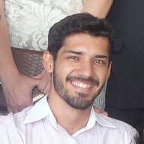
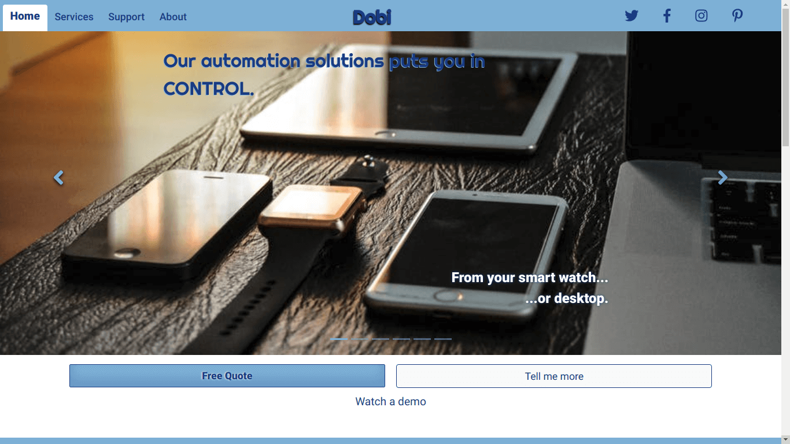

Portfolio
Dobi Automation


Milestone project 1 of 5 I created the Dobi Automation Solutions after the HTML and CSS modules. It was used a mobile first approach and I prioritized the responsiveness, loading time and intuitivity for this project.
For this project, the minimum requisites were to create a band website (all photo, audio and video files provided by Code Institute) with tour dates, embeded video and/or audio files and a gallery with the bands pictures.
I decided at the begin of the course to go for high honors and to give all I can to make it work and that's what I did. This project came out after two months managing my time between work, studying, social life and occasional sleep.
The satisfaction of having this project deployed and submitted made it worth all the research, debugging and days that I could have said I was too tired to do it.
This project was submitted on the 24th of April and I'm waiting on the results.
My CV Website
This very page is my second website and the first where I wrote all the code on my own. I am aware that I'm just at the very beginning of this road, it is long and I can't deny how excited I am.
With a changing colors background and JavaScript interactive animations this website was developed with a mobile-first approach giving great responsiveness but uncompromising the user experience on larger screens.